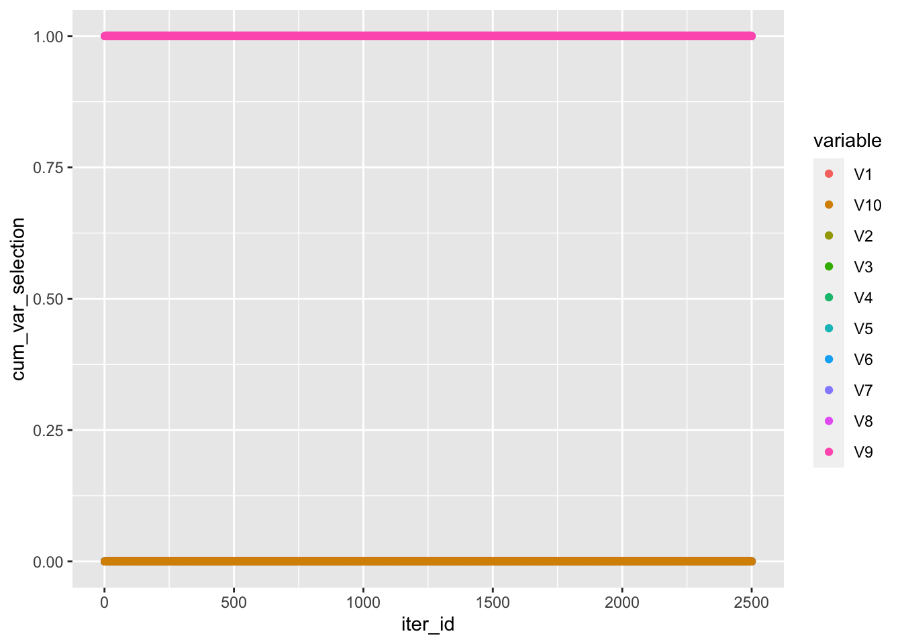

[,1] [,2] [,3] [,4]
[1,] 0.3026 0.1828 0.2258 0.9722
[2,] 0.7514 1.0000 0.6192 0.4896
[3,] 0.7312 0.8324 0.6396 0.9634Step B1. Sampling Component and Variable Activation Report
About the simulated data
With set.seed(1), data from BIP manuscript scenario 1 was simulated.
Results from original BIP() vs. step B1
Defaults used for original BIP(): sample = 5000, burn-in = 1000
Step B1 results taken from in-progress sampling. Thus, we have sample = 2500, burn-in = 1000.
── Attaching packages ─────────────────────────────────────── tidyverse 1.3.2 ──
✔ ggplot2 3.4.0 ✔ purrr 1.0.1
✔ tibble 3.2.1 ✔ dplyr 1.1.2
✔ tidyr 1.3.0 ✔ stringr 1.5.0
✔ readr 2.1.3 ✔ forcats 0.5.2
── Conflicts ────────────────────────────────────────── tidyverse_conflicts() ──
✖ dplyr::filter() masks stats::filter()
✖ dplyr::lag() masks stats::lag() [,1] [,2] [,3] [,4]
[1,] 0.0 1.0 1.0 0.0
[2,] 0.0 1.0 1.0 0.0
[3,] 0.5 0.5 0.5 0.5[1] "Omics features selected globally by original BIP():" [1] 1 2 3 4 5 6 7 8 9 10 11 12 13 14 15 16 17 18
[19] 19 20 21 22 23 24 25 26 27 28 29 30 31 32 33 34 35 36
[37] 37 38 39 40 41 42 43 44 45 46 47 48 49 50 51 52 53 54
[55] 55 56 57 58 59 60 61 62 63 64 65 66 67 68 69 70 71 72
[73] 73 74 75 76 77 78 79 80 81 82 83 84 85 86 87 88 89 90
[91] 91 92 93 94 95 96 97 98 99 100 [1] 1 2 3 4 5 6 7 8 9 10 11 12 13 14 15 16 17 18
[19] 19 20 21 22 23 24 25 26 27 28 29 30 31 32 33 34 35 36
[37] 37 38 39 40 41 42 43 44 45 46 47 48 49 50 51 52 53 54
[55] 55 56 57 58 59 60 61 62 63 64 65 66 67 68 69 70 71 72
[73] 73 74 75 76 77 78 79 80 81 82 83 84 85 86 87 88 89 90
[91] 91 92 93 94 95 96 97 98 99 100 402 458[1] "Omics features selected globally by current version:" [1] 7 9 13 14 23 36 43 63 64 79 100 126 143 163 165 217 224 229 230
[20] 232 244 253 257 264 281 289 296 330 333 348 367 415 421 427 438 443 445 460
[39] 474 477 [1] 4 12 67 75 76 94 97 106 125 135 144 151 160 162 165 182 185 190 210
[20] 212 221 226 235 256 262 292 296 305 307 316 330 332 347 357 363 364 365 371
[39] 372 387 399 401 430 456 459 494 495Here’s a trace plot of the MPP of the first 10 variables in the 1st view.

Run Time
Step B1 alone is slow…
Questions
- How might I decide if my code is doing what it’s meant to do?
- How might I approach these tests/ simulation studies in a meaningful way?
- How might I speed the code? Parallel compuation and conversion to Rcpp…
Quarto
This document was generated using Quarto, which enables you to weave together content and executable code into a finished document. To learn more about Quarto see https://quarto.org.